Dedicado a la mamá de Top
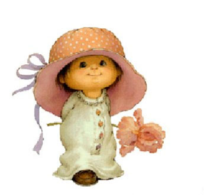
¡ Me estaba acordando de ti !
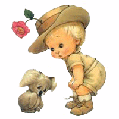
Y quise intentar hacer
algo para que sonrías
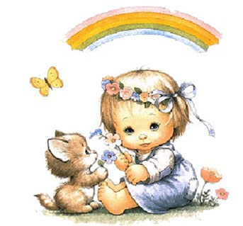
Se me ocurrió ofrecerte una flor
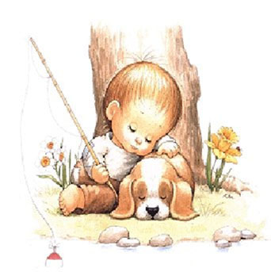
Pero tú mereces mucho más...
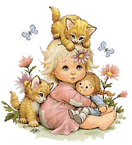
Pensé enviarte un fuerte abrazo...
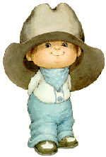
Pero tú mereces mucho más...
Entonces me decidí,
además de enviarte unas flores
y un caluroso abrazo,
te regalaré algo así como...
Una sonrisa espontánea...
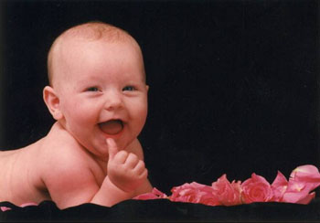
Una sonrisa conquistadora...
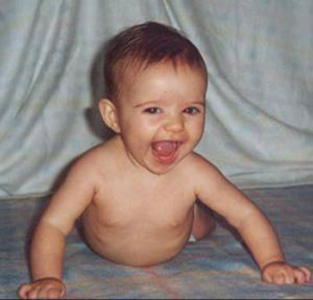
Una sonrisa llena de alegría...
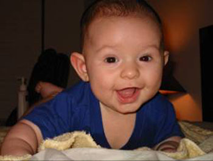
Una sonrisa ingenua...
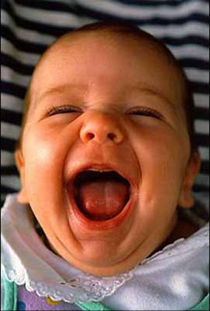
Una sonrisa casi de carcajada...
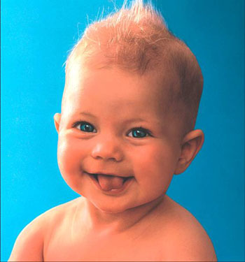
Una sonrisa muy traviesa...
Una sonrisa de victoria...
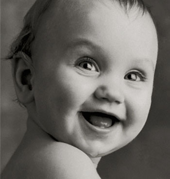
Una sonrisa para recordar...
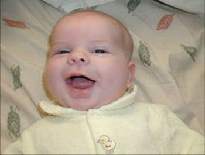
Una sonrisa tierna...
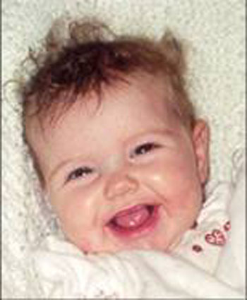
Una sonrisa al despertar...
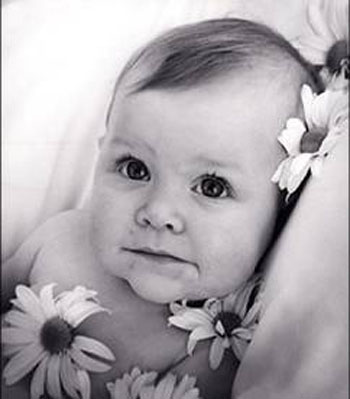
Una sonrisa tímida...
Una sonrisa con la mirada...
(como la tuya)
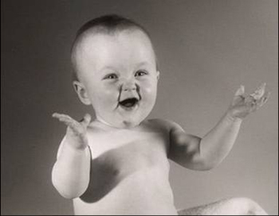
¡Cachis!, no me quedan más sonrisas.
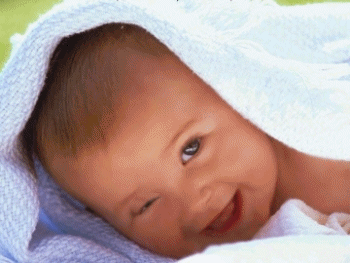
Espero que después de ver todas estas
sonrisas, tú esboces tu propia sonrisa...
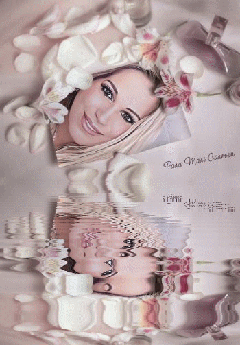
¡¡¡ Porque no hay en el mundo sonrisa
más bonita que la tuya !!!
¡¡¡ Sonríe !!!